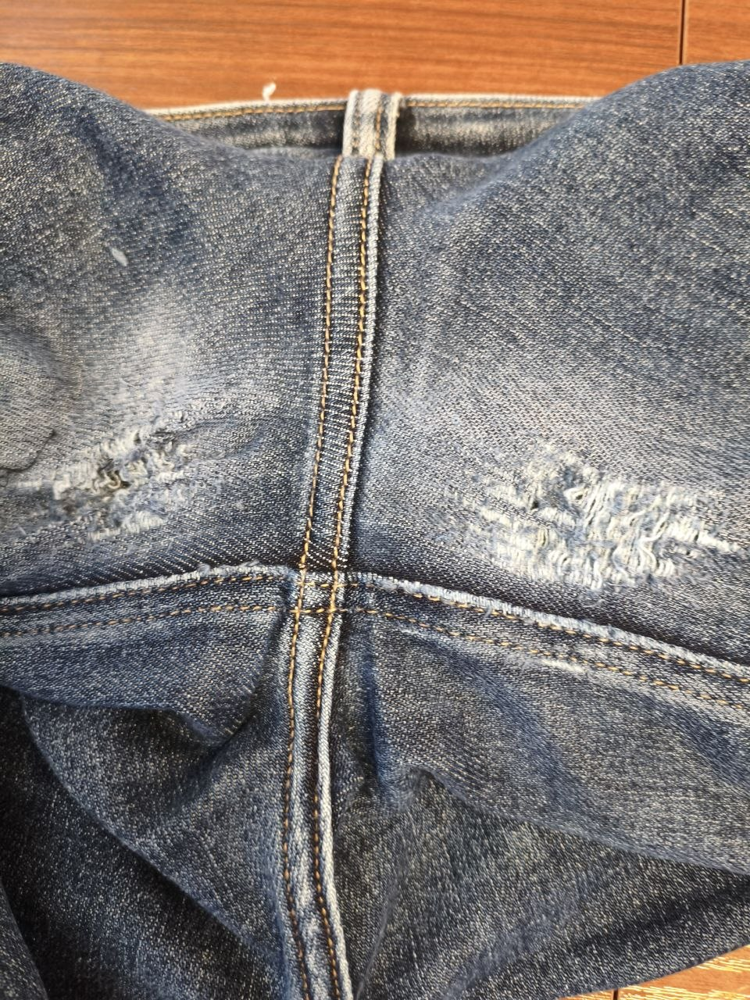
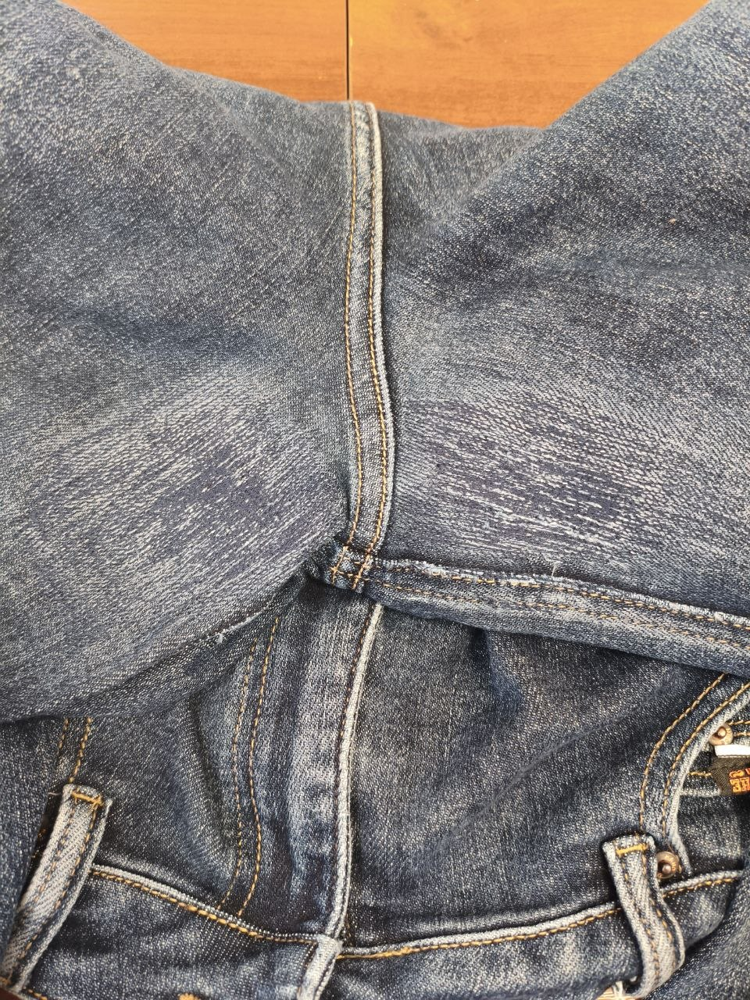
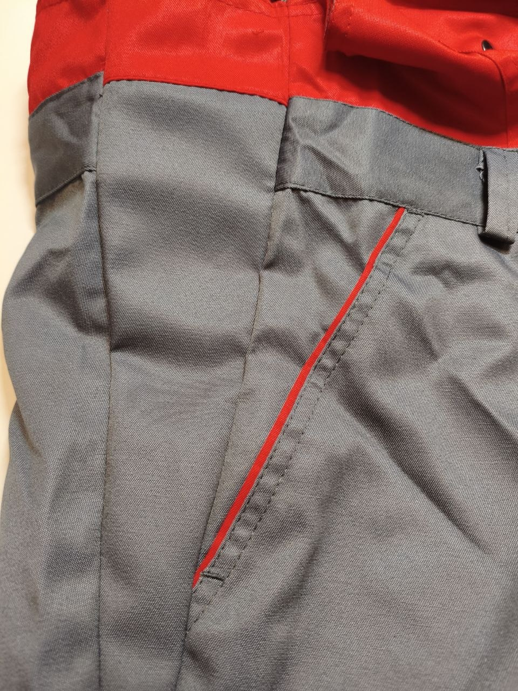
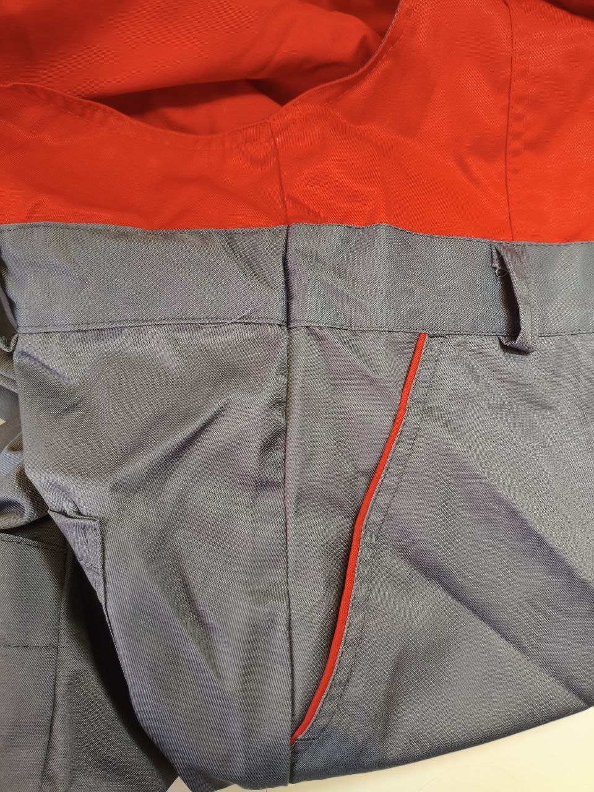

Пошив детских изделий
Пошив детской одежды по задаче клиента и под нужные размеры.
Пошив и ремонт одежды в Орске
Шьём женские и детские изделия, делаем ремонт, подгонку по фигуре, штопку, перешив, укорачиваем, надставляем и переделываем вещи под конкретную задачу клиента.
Услуги
Сайт нужен, чтобы человек сразу понял, можно ли сюда прийти именно с его задачей.
Пошив детской одежды по задаче клиента и под нужные размеры.
Платья, юбки, кофты, брюки, вечерние платья и другие женские вещи.
Обычный и сложный ремонт одежды, когда вещь нужно аккуратно восстановить.
Ушить, расшить и подогнать вещь по посадке, длине и объёму.
Восстановление ткани в местах износа, особенно на джинсах и рабочих участках.
Можно укоротить, подрезать, надставить и изменить длину изделия.
Замена молний, пуговиц, кнопок и других деталей, которые изнашиваются чаще всего.
Когда вещь нужно не только починить, но и заметно изменить под клиента.
Чаще всего
Сейчас чаще всего приносят именно ремонт и подгонку, но пошив тоже можно обсудить отдельно.
Обычный и сложный ремонт вещей, которые нужно привести в порядок и носить дальше.
Часто просят ушить, расшить, переделать по посадке и сделать вещь удобнее.
Особенно часто приносят джинсы и другие вещи с сильным износом ткани.
Ориентир по цене
Точная стоимость зависит от ткани, объёма работы и состояния изделия, но эти цены помогают заранее понять порядок.
Расшить изделие
от 600 ₽Цена зависит от того, что именно нужно расшить и какой объём переделки требуется.
Штопка
от 400 до 800 ₽Зависит от размера повреждения, ткани и того, насколько сильно изношен участок.
Подрезка брюк
от 350 до 600 ₽Финальная цена зависит от ткани, обработки низа и сложности подрезки.
Подшить джинсы
от 350 до 700 ₽В том числе с сохранением длины, если нужно сохранить фабричный вид низа.
Отрезать и подшить юбку или платье
от 400 до 1000 ₽Зависит от ткани, количества слоёв и того, как обработан низ изделия.
Примеры работ
Реальные фото работают лучше длинных объяснений. Здесь можно сразу увидеть аккуратность работы на конкретных примерах.
Пример аккуратного восстановления ткани в зоне сильного износа.

На этом этапе видно, что быстрым ремонтом тут не обойтись.

После штопки участок выглядит цельнее и готов к дальнейшей носке.
Один из примеров, когда вещь нужно аккуратно расширить и переделать по объёму.

Такой пример показывает аккуратность швов и обработку после расшивки изделия.

По фото можно понять, как выглядит результат уже на самой вещи, а не только на шве.
Пошив
Пошив здесь выделен отдельно, потому что это не то же самое, что обычный ремонт. Можно обсудить пошив детских и женских изделий, платьев, юбок, кофт, брюк и вечерних платьев.
Почему дорого
Индивидуальный пошив это не массовое производство и не готовая вещь из магазина. Изделие делается по вашим меркам, под вашу фигуру, задачу, ткань и посадку. Это долгая, ручная и кропотливая работа.
Как проходит работа
Что нужно сделать: пошив, ремонт, штопка, ушить, расшить или переделать вещь.
Тип изделия, желаемый результат и удобное время для визита или заказа.
Вещь после пошива, ремонта или подгонки с учётом всех оговорённых деталей.
Перед звонком
Платье, юбка, кофта, брюки, детская вещь, джинсы или другое изделие.
Сшить, ушить, расшить, подогнать, укоротить, надставить, отремонтировать.
Посадка, длина, срок, ткань и другие детали, которые нельзя упустить.
Вопросы
Этот блок нужен для простых и прямых ответов без долгих переписок.
Да, можно обратиться не только за ремонтом, но и за пошивом детских и женских изделий.
Да, если вещь нужно укоротить, подогнать по фигуре, ушить, расшить, заменить детали или заметно переделать.
Потому что это не готовая вещь из магазина, а работа по меркам, с посадкой под клиента, тканью, обработкой и временем на точный результат.
Классические мужские костюмы не шьются. Если речь о другой мужской вещи или переделке, это лучше уточнить по телефону.
Назовите тип изделия, что именно нужно сделать и есть ли важные пожелания по длине, посадке или сроку.
Контакты
Проще всего позвонить, написать SMS, в мессенджер или в VK. В часы приёма можно приходить сразу, а в другое время лучше заранее договориться.
Телефон
+7 909 606-67-78Телефон, SMS, мессенджеры, VK
Адрес
Проспект Ленина, 83, ОрскМаршрут можно открыть в Яндекс Картах
Часы работы
Будни с 11:00 до 18:00В часы приёма можно приходить сразу
По предварительной записи
Можно раньше или позже рабочего времениЕсли нужно в 9 или 10 утра либо в другое время, лучше заранее созвониться.